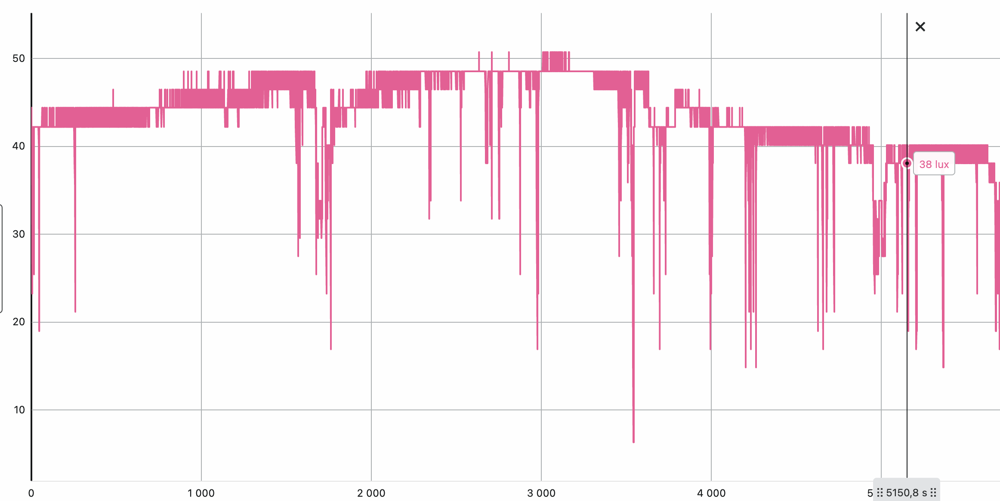
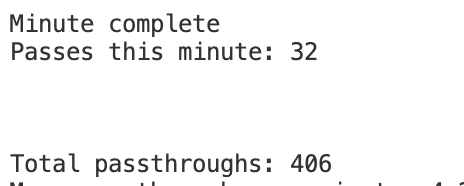
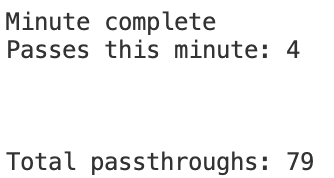

Denne siden beskriver hva slags informasjon det går ann å lese fra datasettet. For å se koden bak flere av tallene, se Programmeringsdelen
Om du har lest om koden bak analysen vil du se at jeg har brukt et datasett som var målt i ca. en time. For denne analysen vil jeg bruke ett som var målt i 6 timer på en mandag.
Datasettet er loggført av en Vernier QuestLab 2. Vernier har en egen app for å laste datasettet over til datamaskin som hetet Vernier Graphical Analysis. Dette programmet lar deg se en graf over dataene som er loggført.

Denne grafen inneholder ikke alle 6 timene
Her kan vi se at lysnivået varierer veldig og gjør det vanskelig å si forskjell på vanlig lysnivå og lysnivået når noen passerer. Det er viktig å endre Threshold variabelen til det laveste punktet hvor grafen ikke viser tydelig endring. I dette tilfellet er det 38 lux. Det er enkelt å se om Threshold er feil eller ikke med å tenke på hvor sannsynlig resultatet er.
For eksempel her er det svært usannsynlig at det var 406 passeringer på litt over en og en halv time og 32 av dem bare det siste minuttet med en Threshold av 40. Det betyr at annen hvert sekund har noen passert.

Med en threshold av 38 ser det mye mer sannsynlig ut.

QuestLab 2 har en funksjon som lar deg lagre flere kjøringer i samme datasett. Dette ble en svært nyttig funksjon her siden lysnivået endret seg ofte på grunn av dagslyset. Jeg holdt et øye med loggeren og når det begynte å bli mørkere ute, skiftet jeg til en ny kjøring. Datasettet som er lagt ved har 5 kjøringer som til sammen utgjør 6 timer. For å endre hvilken kjøring programmet leser av kan du endre variablene time og leveltil navnet på kolonnen for tid og lysnivå henholdsvis.
Tid: 93 minutter
Passeringer: 79
Dette var de første 93 minuttene av skoledagen på en mandag. Median og typetallet er begge 0, men det betyr ikke nødvendigvis at det var få som passerte måleren. Det mest aktive munuttet hadde faktisk 9 passeringer som er ganske mye hvis du tenker på at det er nesten en passering hver 6. sekund. Gjennomsnittet av passeringer hvert minutt var ca. 0.84.
Tid: 42 minutter
Passeringer: 18
De neste 42 minuttene var tydelig ikke like aktiv. Det er faktisk ikke nok passeringer til at median og typetall kan være noe annet enn 0. Gjennomsnittet var halvert ned til ca. 0.42 og det mest aktive minuttet hadde 3 passeringer. Det er tydelig at disse 42 minuttene var det lite aktivitet ut og inn av klasserommet.
Tid: 24 minutter
Passeringer: 41
Med en tid av bare 24 minutter tok nesten hele denne kjøringen sted i lunsjpausen. Gjennomsnittlig passeringer hver minutt her var 1.64, men her er det ikke helt sikkert at gjennomsnittet er det beste å måle med. Median og typetallet er nemlig fortsatt 0. Det er altså noen få minutter med mange passeringer som drar opp gjennomsnittet. Dette blir enda mer tydelig når det mest aktive minuttet hadde 17 passeringer. Altså var det ikke langt unna halvparten av alle passeringene hele denne kjøringen som tok sted på bare ett minutt.
Tid: 56 minutter
Passeringer: 66
Denne kjøringen varte lengre enn den forrige, men har fortsatt et gjennomsnitt på ca. 1.15. Jeg kan se for meg at dette stemmer litt mer enn 3. kjøring fordi det akkurat har være pause og klassen arbeider med å samle inn data fra ulike steder på skolen som skaper en del aktivitet ut og inn av klasserommet, men median og typetall viser fortsatt 0. Jeg har en mistanke om at denne kjøringen akkurat har fått med pausen på slutten, men etter å ha tvunget programmet til å avslutte 10 minutter tidligere får jeg fortsatt et liknende resultat. Altså har flertallet av minuttene hatt 0 passeringer, men det har også hatt ganske jevnt med flere passeringer med å se på det mest aktive minuttet som hadde 8 passeringer. Her kan det også være greit å nevne at variasjonsbredden på alle kjøringene har vært det samme som det mest aktive minuttet siden det minst aktive minuttet har alltid hatt 0 passeringer.
Tid: 68 minutter
Passeringer: 58
Den siste kjøringen likner mest på den første. Den har et gjennomsnitt av ca. 0.84 passeringer i minuttet og fortsatt median og typetall på 0. Jeg har ikke så veldig mye å legge til den siste. Den er rett og slett litt kjedelig. Det mest aktive minuttet hadde 12 passeringer (og variasjonsbredden er 12) som kan komme av at folk går inn og ut av klasserommet under pausen, men det kan også ha kommet av lysforskjeller. I Tromsø begynner det å bli mørkt ute og allerede ved slutten av denne skoledagen begynner det å bli mørkt ute. Jeg satt derfor Thresholdlitt ekstra lavt for å motarbeide endringene i dagslyset.
For å oppsummere kan mengden passeringer variere veldig, men det er også mulig å spore opp flere av disse endringene og se hva som er mest sannsynlig og justere for endringer som kan skje i omgivelsene. Det kom for eksempel tydelig frem når det var lunsj og noen pauser og selv om noen minutter kunne ha store mengder passeringer var det mulig å komme frem til logiske løsninger.
Jeg synes dette har vært et lærerikt og interessant prosjekt. Langs veien har det vært viktig å være løsningsorientert og kreativ. Deler av prosjektet mitt har vært vanskelig og utfordrende, men det har vært svært belønnende å komme meg gjennom. Jeg likte å kunne skrive dette og vurdere og reflektere over hvorfor tallene er slik som de er. Jeg likte også å kunne prøve ulike ting slik som å dele opp datasettet for å se forskjeller mellom ulike tider. Alt i alt synes jeg det har vært en god erfaring og et spennende prosjekt.